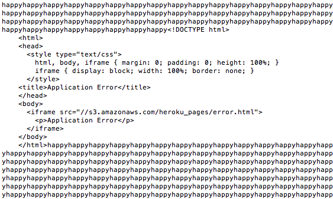

2048 Gamecenter Security Assessment
Rob Lasell, 22 February 2014
Introduction
This is an assessment of security vulnerabilities present in Sean Deneen's 2048 Gamecenter web app, created with node, express, and heroku. A working 2048 Gamecenter is supposed to receive scores, usernames, grids, and timestamps from a 2048 game client before displaying them in order of decreasing score, as well as be able to report back grids and scores for a particular username. There is a high potential for many different kinds of security flaws in a web app like this, and I was hired to detect and report on any such flaws.
Methodology
I began with "black box" testing, using only the heroku web app provided to me by Mr. Deneen. I probed for weaknesses by sending data using a modified 2048 game client very similar to the ones used by many of Ming Chow's Comp 20 students to test their Gamecenters. After the black box testing, I turned to Mr. Deneen's source code in order to find remaining vulnerabilities.
Abstract of Findings
Several security flaws were detected. These included cross-site-scripting vulnerability, lack of authentication, and vulnerability to database-overloading DoS attacks. This app is definitely at risk from hackers unless these flaws are addressed.
Issues Found
1. Cross-Site-Scripting (XSS)
-
Javascript or other code can be inserted into the database directly through the username.
-
This problem affects the main page of the app (http://sdeneen-2048.herokuapp.com/)
-
HIGH severity: all manner of javascript could be inserted into the database used by the app, which could pose a security risk not just for this app but for other sites that communicate with it.
-
I found this issue by attempting to insert javascript into my submitted username. I was able to change the background image of the app, cause the app to raise an alert, and even redirect the app to a different web page.
-
This problem is easily prevented by validating and sanitizing all user input. One quick fix would be to write some code in the app to convert any angle brackets to less offending characters.
2. All Domains Allowed
-
Anyone can send any data they like to the app from any domain.
-
This problem affects the /submit.json module of the app.
-
LOW severity: less worrisome than the possible XSS attacks, this problem is mainly to do with how "legitimate" the high scores and grids stored in the database are.
-
I found this issue while looking at the source code for the app. I noticed this line:
res.header("Access-Control-Allow-Origin", "*");
This allows anyone to send any data they like, for example using curl.
-
This problem can be prevented by replacing the "*" in the above line of code with the address of the 2048 game client being used with the app.
3. DoS
-
Due to limited storage in the MongoLabs database, a denial-of-service attack can be used to shut down the app by overloading the database.
-
This problem affects the entire app, since it directly affects the database.
-
MEDIUM severity: this breach could conceivably be used to shut down the app by filling up the database.
-
I found this flaw while attempting to submit a very long username many, many times via an infinite loop.

-
This problem is difficult to solve without getting a bigger database, but one possible solution would be to limit the maximum size of the username.
Conclusion
The issues mentioned in this assessment are relatively simple and straightforward, but they have the potential to completely fry this app. The recommendations in the assessment for patching these flaws should be followed in order to improve the security of the app. The cost of this action should not be prohibitive; any web programming undergrauduate ought to be able to fix these issues in a few hours at most.